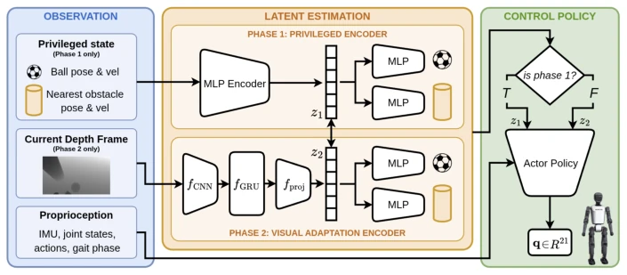

This work attempts to use a humanoid robot to play soccer, with the core being "privilege distillation". During training, ground truth is provided; during inference, it relies on guessing via a depth camera. Results are acceptable under static obstacles, but collapse when encountering living humans (dynamic opponents), with the success rate dropping to 46%. Although RMA ideas are employed, essentially it remains a transition from an "open-book exam" to a "closed-book exam" within simulation environments, and sim-to-real has not yet been realized. For high-degree-of-freedom systems such as humanoid robots, balance and ball control are inherently difficult, and adding dynamic confrontation makes it hell-level difficulty. However, the approach of fusing perception and control end-to-end is commendable, at least more flexible than traditional decoupled YOLO+Kalman schemes.
Humanoid soccer is the ultimate testbed for loco-manipulation, requiring simultaneous balance, ball control, and obstacle avoidance. Existing methods mostly adopt modular designs, such as YOLO detection plus Kalman filtering in [7], decoupling perception and control, which leads to perception outputs not necessarily being suitable for control policies. Furthermore, most works assume the robot is isolated without support, lacking dynamic opponents [10]. With hardware advancements (such as Booster T1), demands for perception and control are higher, necessitating end-to-end optimization. Existing DRL performs well in locomotion [11], but remains open for complex interactive loco-manipulation. This paper aims to address the visual adaptation problem under partial observability, avoiding explicit state estimation, and enabling the policy to directly learn to extract task-relevant states from depth observations.
A two-stage framework is proposed. Phase 1: Privileged Encoder utilizes ground truth (ball, obstacle states) to generate latent vector $z_t$, combined with proprioceptive input to the policy. Curriculum learning is adopted, progressing from no obstacles to static obstacles to dynamic opponents, using DAgger regularized PPO to prevent forgetting. Phase 2: Visual Encoder module, where the policy is frozen, and a CNN+GRU network is trained to predict $z_t$ from depth maps, matching privileged representations via distillation loss, and adding an auxiliary head to regress ball and obstacle states to stabilize learning. Final deployment relies solely on the onboard depth camera, without requiring explicit state estimation. This design maintains consistency of the policy interface, only changing the latent vector generation mechanism, achieving transfer from privileged information to visual perception.
Simulation of Booster T1 based on mjlab [24]. Three scenarios: no obstacle, static obstacle, dynamic ball attacker. Metrics include success rate (SR), T2T, collision rate, etc. No obstacle 100%, static 96%, dynamic 46%. Ablation experiments show that each stage of curriculum learning is crucial for final performance, and early stages cannot handle obstacles. Perception error increases slightly in dynamic scenarios, but the main bottleneck lies in closed-loop control rather than perception. This proves the current framework lacks robustness to dynamic opponents, and sim-to-real still requires verification.
其他图片Other Figures

Fig. 2: Overview of the two-phase framework. In Phase 1, a privileged encoder maps ground-truth ball and obstacle states to a latent representation used by the policy. In Phase 2, a visual encoder predicts the same latent from depth observations, enabling deployment with onboard sensing only.